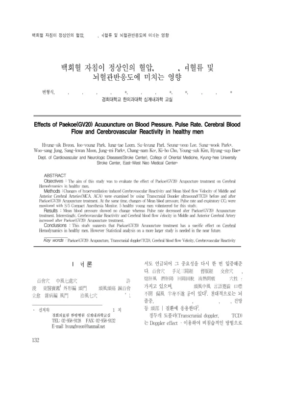

백회혈 자침이 정상인의 혈압, 맥박수, 뇌혈류 및 뇌혈관반응도에 미치는 영향
Byeon Hs, Park Jy, Leem Jt, Park Sk, Lee Sy, Park Sw, Jung Ws, Moon Sk, Park Jm, Ko Cn, Cho Kh, Kim Ys, Bae Hs
The Journal of Internal Korean Medicine 132-140

첫 장 · 오픈액세스First page · open access
논문 소개Summary
건강한 남성 다섯 명에게 백회(GV20)에 침을 놓고 뇌혈류가 어떻게 달라지는지 본 연구입니다. 경두개 도플러로 중대뇌동맥과 전대뇌동맥의 평균 혈류속도, 그리고 과호흡으로 유발한 뇌혈관반응도를 자침 전후에 쟀고, 평균 혈압과 맥박수, 호기말 이산화탄소는 마취 감시장치로 함께 기록했습니다. 자침 뒤 평균 혈압은 달라지지 않았고 맥박수는 줄었으며, 두 동맥의 혈류속도와 뇌혈관반응도는 모두 늘었습니다. 저자들은 백회 자침이 뇌혈류에 특정한 영향을 준다고 보면서도, 대상이 다섯 명뿐이라 통계적 검정을 갖춘 더 큰 연구가 필요하다고 스스로 적었습니다.
Five healthy men received acupuncture at Paekoe (GV20) to see how cerebral blood flow would change. Mean blood flow velocity in the middle and anterior cerebral arteries, together with hyperventilation-induced cerebrovascular reactivity, was measured by transcranial Doppler before and after needling, while mean blood pressure, pulse rate and end-tidal carbon dioxide were recorded on an anaesthesia monitor. Mean blood pressure did not change and pulse rate fell after needling, whereas flow velocity in both arteries and cerebrovascular reactivity rose. The authors read this as a specific effect of GV20 on cerebral haemodynamics, but noted themselves that with only five subjects a larger study carrying proper statistical testing is needed.
인용Cite
Byeon Hs, Park Jy, Leem Jt, Park Sk, Lee Sy, Park Sw, Jung Ws, Moon Sk, Park Jm, Ko Cn, Cho Kh, Kim Ys, Bae Hs. 백회혈 자침이 정상인의 혈압, 맥박수, 뇌혈류 및 뇌혈관반응도에 미치는 영향. The Journal of Internal Korean Medicine. 2009:132-140.